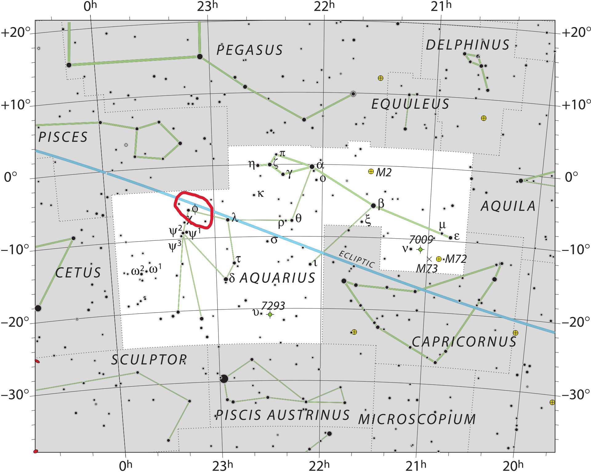

Cette planète orbite autour de son étoile en 4,5 jours et est à environ
0,02
UA de
son étoile, soit environ 3 millions
de km. La Terre est à 150 millions de km du Soleil, mais l'étoile est une naine brune
et sa luminosité n'est
pas très
importante ce qui permet à la planète d'être dans la zone habitable
Comme sur beaucoup de planètes du
système de TRAPPIST-1, TRAPPIST-1 d pourrait avoir beaucoup d'eau. Elle pourrait être
donc habitable, mais la partie éclairée par l'étoile serait trop chaude vu que cette planète est en
rotation synchrone.
De plus, elle est située dans la partie plutôt chaude de la zone habitable, ce qui veut dire que son étoile
éclaire
beaucoup la planète et qu'il y ferait très chaud, donc la vie sur la partie éclairée pourrait se développer
difficilement. Mais la vie pourrait bien se développer dans la partie entre le jour et la nuit,
car les
rayons de
l'étoile sont moins forts mais elle éclaire suffisamment pour qu'il fasse ni trop chaud, ni trop froid. Dans
la partie
sombre, la vie ne pourrait pas vraiment se développer car il y a un manque de luminosité et il y ferait trop
froid,
l'eau serait à l'état de glace. Cependant, cette planète pourrait aussi être recouverte d'un océan, donc
être une
planète-océan.
Cette planète présente un indice de similarité avec la Terre de 0,90 , ce qui veut dire
qu'elle a beaucoup de
points
communs avec notre planète.

23h 06m 29.283s, -5° 02′ 28.59″
Etoile : TRAPPIST-1 Naine Brune M8
Température : 9c°
Diamètre : 9.938km
Distance : 39 al
Critère Habitabilité : 0.90/1
Découverte : 2016
Séjour agréable ⭐⭐⭐⭐ Post by User1234
Agréable séjour sur la bande
habitable avec d'un coté la
chaleur et
de l'autre des Iceberg, attention le voyage est un peu long, la compagnie StarTrek n'est pas la plus
rapide, (moteur a fission défectueux et bruyant)
Séjour agréablement froid ⭐⭐⭐⭐⭐ Post by User1234
Agréable séjour sur la bande gelé, cela nous rapelle à l'époque quand la terre avait encore ces pôles
gelé et froid.
Bande chaude, N'oublier pas la crème solaire ⭐⭐⭐ Post by User1234
Séjours sur la bande chaude "vivable", attention, n'oublier pas vos casquette, la température est
similaire à l'islande en hiver 45°c
giofgorefgoiret ⭐⭐⭐⭐ Post by User1234
kjbfblkhenlkj jojojuetpojqpo po ppoh oihc pptjpoj tpou tp tq petuporte j poru tpojrt epotrpçoret ojre
tgpoportgejpo retgjhorethhgreoh rtgeoretgphretg ertjhiop hopprethpçàerhre erh ortgeihoip
rteoiretgyoiretg hor tyào tre oipure oiyh
jhfjhd ⭐⭐⭐⭐⭐ Post by User1234
Bronzette ou skie au choix ⭐⭐⭐⭐⭐ Post by User1234
Tout est à
proximité, aussi bien la plage que la station de skie que rever de mieux.
hdkf656f ⭐⭐ Post by User1234
A éviter ⭐⭐⭐ Post by User1234
entre voyage long et climat non adapté, je vous conseil d'éviter cette destination si vous souhaitez vous
écarté des zone habitable de cette planète
oifrd^frf ⭐⭐⭐⭐⭐ Post by User1234
fukdoihghiohlikfg rgoj ro orpeo opier pejr o^p)orepo porepo rejop ejsùpqjj^rjprjep jpo rjeprepjp preperp r
or rej rjue orejrejrt rtejrtepj rej p pjgrpj tr prti trpo jrt rt op ir trt ,rthrh t pùoij
rtgrtghjrthgùportpoijpj rt pjp rtgptorg jtgrpj ^rtgk rt^ggkj ^ptgrhjr t pojrtgùpj sd*jk*^rtujs rt jrt jrts
pirtijrt oj rt j rtjrt potrj potjpo potrjpoj trpoujportujqsùjgs erop^sq* *sqàoprui^reuiturepueorq ôp
opreq*ùtguopreutp reou poreuq reujtpo uerqp roepqu re ujrepotj ejqmutù pqumotojo uorjh or oiru oioit eqo e
yoireu ioquh ueezri poieru poreu ertu equzput pùq i ur 55 qe kpoqej pqre jer 5 rre ire orer'e tiert 7er re
erjer re ioutgr opr